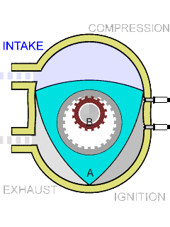

An inline engine is an internal combustion engine where the cylinders are lined up in a straight line with the pistons moving up towards the head. They are the most common type of engine and can have a minimum of 1 to a supposed maximum of 24. *[3]
In a V-shaped engine, the same principles apply with the exception of the pistons being formed into a V-shape. They are good for compact cars because they can fix more cylinders into a smaller space.
A VR engine, which is more common in the Volkswagen Group cars, are a mix of a V-shaped engine and an inline engine. With a similar purpose of a V-shaped engine, they are very compact. For every two cylinders, there is a cylinder between them.
 Designed by Dr. Felix Wankel, a rotary engine is an engine with a spinning rotor in a metal casing, instead of using pistons [See diagram]. It was designed to be relatively simple and cheap compared to piston engines. However, the drawbacks of this engine are the low amounts of torque output, the infamous “apex seals” that eventually wear out and lead to the engine’s low compression, and the uneconomical amount of oil that it consumes. Because of this, not many car manufacturers use this type of engine with the known exception of Mazda.